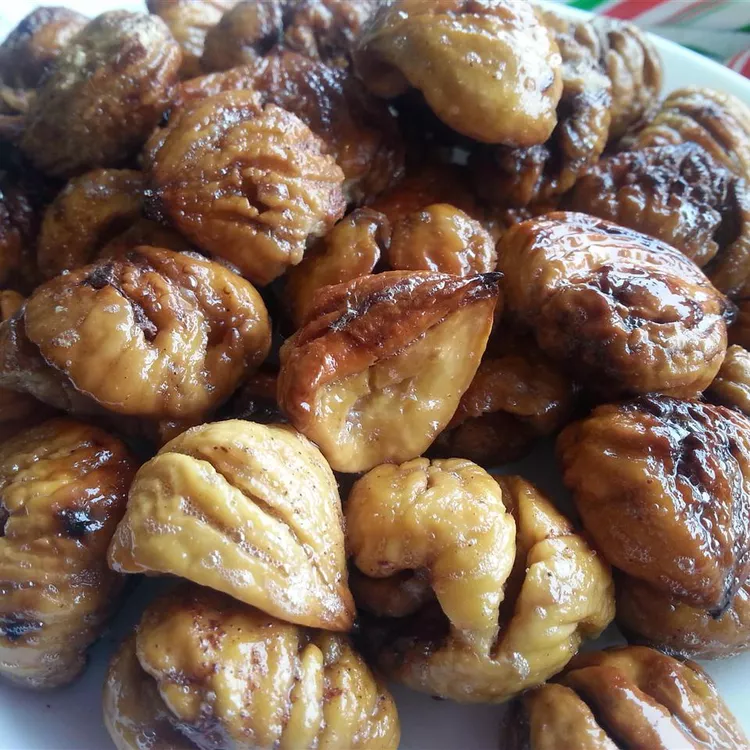

Roasted Chestnuts

Description
These chestnuts may be roasted in the oven instead of on an open fire, but they're still wonderfully festive. This roasted chestnut recipe will quickly become a seasonal staple in your home.
These roasted chestnuts are fantastic for snacking, especially when paired with a warming cocktail or homemade eggnog. They also make a fantastic ice cream or yogurt topping, depending on whether you want to enjoy them for breakfast or dessert.
Ingredients
- 1 pound chestnuts
- ¼ cup butter
- 1 pinch ground cinnamon
- salt to taste
Steps
- Preheat the oven to 375 degrees F (190 degrees C).
- Wash and dry chestnuts. Place flat-side down on a cutting board. Using a paring knife, score a large "X" on the rounded side, covering at least half of the chestnut. Make sure the knife goes through the outer skin and the brown layer underneath. This will aid peeling after being roasted. Place nuts in a shallow baking pan.
- Bake in the preheated oven for 25 to 30 minutes. Remove, leaving the oven on, and allow them to cool; peel off the shells.
- Place nuts in a skillet with butter; sauté over high heat until butter is melted and chestnuts are well coated. Return skillet to oven and roast until they are golden on top. Sprinkle with cinnamon and salt.